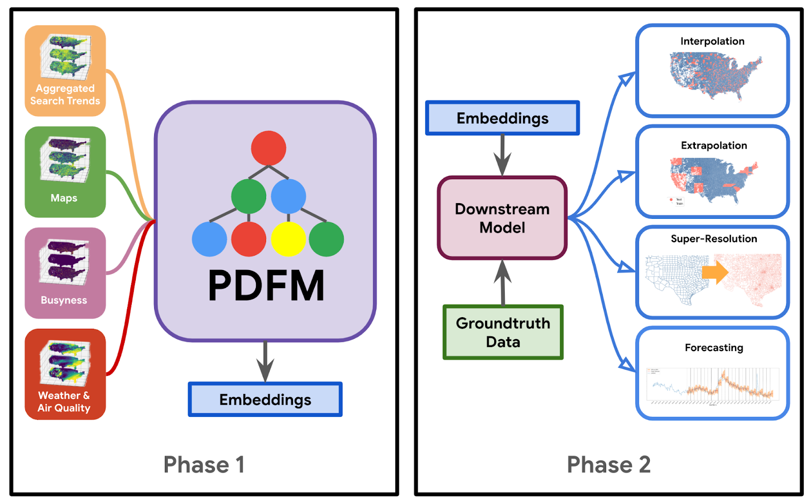
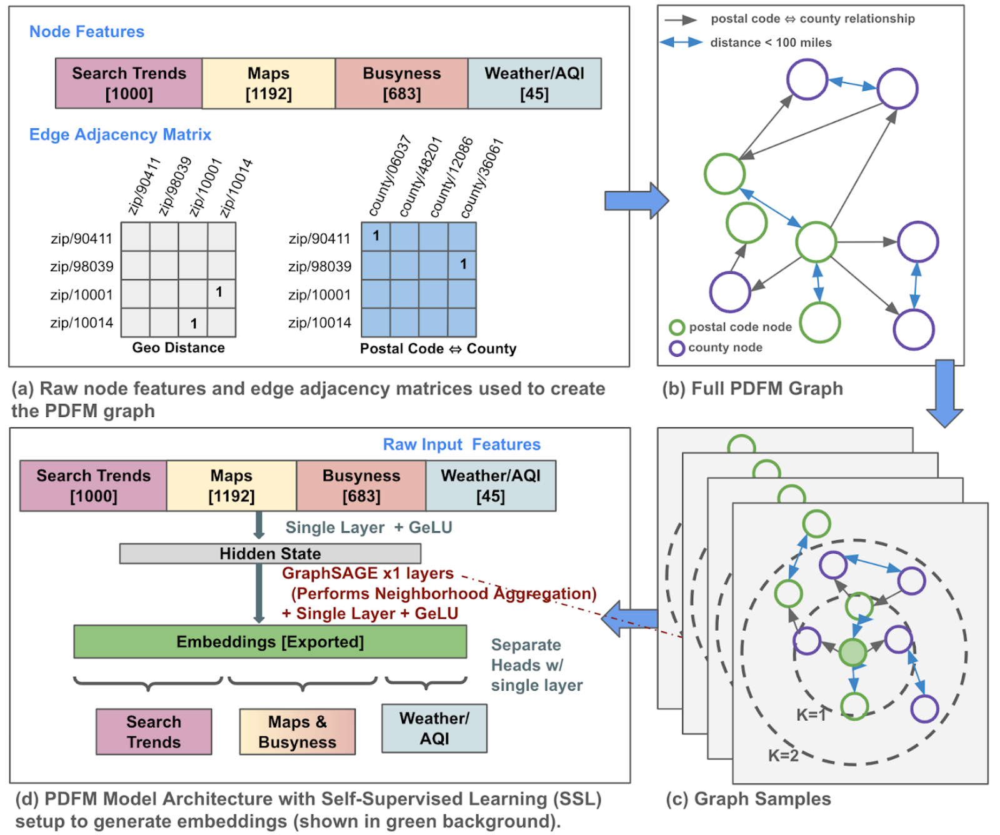

6 Population Dynamics - FM
General Geospatial Inference with a Population Dynamics Foundation Model

6.1 Información Básica
| Elemento | Detalle |
|---|---|
| Referencia corta | Agarwal et al., 2025 (PDFM) |
| Título completo | General Geospatial Inference with a Population Dynamics Foundation Model |
| Revista / Volumen / DOI | arXiv preprint (cs.LG); arXiv:2411.07207v4; 30 Jan 2025. DOI: https://doi.org/10.48550/arXiv.2411.07207 |
| Temática | IA geoespacial; modelos fundacionales; grafos; salud pública; factores socioeconómicos; medio ambiente; forecasting |
| Contexto / Problema | La toma de decisiones en salud pública, bienestar social y ambiente requiere inferencias geoespaciales robustas con datos heterogéneos y desbalanceados. Métodos tradicionales dependen de features y modelos específicos por tarea, dificultando la escalabilidad a nuevas variables, resoluciones y regiones. El trabajo propone un modelo fundacional (PDFM) que sintetiza múltiples modalidades para producir embeddings reutilizables en tareas de interpolación, extrapolación, super‑resolución y apoyo a pronósticos. |
| Keywords | Foundation model; geospatial embeddings; Graph Neural Networks; GraphSAGE; interpolation; extrapolation; super‑resolution; forecasting; TimesFM; Data Commons; CDC PLACES; SatCLIP; GeoCLIP |
6.2 Abstract
Original:
Supporting the health and well-being of dynamic populations around the world requires governmental agencies, organizations, and researchers to understand and reason over complex relationships between human behavior and local contexts. This support includes identifying populations at elevated risk and gauging where to target limited aid resources. Traditional approaches to these classes of problems often entail developing manually curated, task-specific features and models to represent human behavior and the natural and built environment, which can be challenging to adapt to new, or even related tasks. To address this, we introduce the Population Dynamics Foundation Model (PDFM), which aims to capture the relationships between diverse data modalities and is applicable to a broad range of geospatial tasks. We first construct a geo-indexed dataset for postal codes and counties across the United States, capturing rich aggregated information on human behavior from maps, busyness, and aggregated search trends, and environmental factors such as weather and air quality. We then model this data and the complex relationships between locations using a graph neural network, producing embeddings that can be adapted to a wide range of downstream tasks using relatively simple models. We evaluate the effectiveness of our approach by benchmarking it on 27 downstream tasks spanning three distinct domains: health indicators, socioeconomic factors, and environmental measurements. The approach achieves state-of-the-art performance on geospatial interpolation across all tasks, surpassing existing satellite and geotagged image based location encoders. In addition, it achieves state-of-the-art performance in extrapolation and super-resolution for 25 of the 27 tasks. We also show that the PDFM can be combined with a state-of-the-art forecasting foundation model, TimesFM, to predict unemployment and poverty, achieving performance that surpasses fully supervised forecasting. The full set of embeddings and sample code are publicly available for researchers. In conclusion, we have demonstrated a general purpose approach to geospatial modeling tasks critical to understanding population dynamics by leveraging a rich set of complementary globally available datasets that can be readily adapted to previously unseen machine learning tasks.
Traducción al español:
Apoyar la salud y el bienestar de poblaciones dinámicas exige comprender y razonar sobre relaciones complejas entre el comportamiento humano y los contextos locales. Esto incluye identificar poblaciones en mayor riesgo y orientar recursos limitados. Los enfoques tradicionales suelen requerir features y modelos específicos por tarea para representar comportamiento humano y entorno natural/ construido, lo que dificulta su adaptación a tareas nuevas o afines. Para abordarlo, se introduce el Population Dynamics Foundation Model (PDFM), que busca capturar relaciones entre diversas modalidades de datos y es aplicable a un amplio rango de tareas geoespaciales. Primero, se construye un conjunto geo‑indexado para códigos postales y condados de EE.UU., con información agregada rica sobre comportamiento humano (mapas, afluencia/“busyness”, tendencias de búsqueda agregadas) y factores ambientales (clima y calidad del aire). Luego, se modelan estos datos y las relaciones complejas entre lugares mediante una red neuronal de grafos, produciendo embeddings adaptables a muchas tareas con modelos sencillos. La eficacia se evalúa con 27 tareas en tres dominios: indicadores de salud, factores socioeconómicos y mediciones ambientales. El enfoque logra state‑of‑the‑art (SoTA) en interpolación para todas las tareas, superando codificadores basados en satélite e imágenes geolocalizadas; y alcanza SoTA en extrapolación y super‑resolución para 25 de 27 tareas. Además, se muestra que PDFM puede combinarse con el modelo fundacional de pronóstico TimesFM para predecir desempleo y pobreza, superando a un pronóstico totalmente supervisado. Se liberan embeddings y código de ejemplo. En síntesis, se demuestra un enfoque general para modelado geoespacial crítico para entender la dinámica poblacional, aprovechando conjuntos de datos complementarios, globalmente disponibles, fácilmente adaptables a tareas inéditas.
6.3 Preguntas de Investigación / Hipótesis
- ¿Puede un modelo fundacional geoespacial, basado en GNN y datos multimodales, generar embeddings generales que superen a codificadores de localización existentes (p.ej., SatCLIP/GeoCLIP) en interpolación, extrapolación y super‑resolución? (inferida)
- ¿Pueden estos embeddings mejorar pronósticos univariados (TimesFM) de indicadores socioeconómicos (desempleo, pobreza) mediante una capa adaptadora simple? (inferida)
6.4 Metodología
6.4.1 Flujo de trabajo
- Fase 1 – Modelo fundacional (PDFM): construcción de un grafo geoespacial (códigos postales y condados como nodos; aristas por proximidad y similitud de comportamiento) e integración de modalidades (tendencias de búsqueda agregadas, POIs en mapas, busyness, clima y calidad del aire; además embeddings SatCLIP como variante). Entrenamiento auto‑supervisado para reconstruir features por fuente y obtener embeddings desagregados por modalidad.
- Fase 2 – Tareas downstream: uso de embeddings como covariables en modelos ligeros (Ridge, GBDT, MLP) para interpolación, extrapolación y super‑resolución de 27 variables (salud, socioeconomía, ambiente).

6.4.2 Modelos / Algoritmos
PDFM (GNN GraphSAGE): muestreo de subgrafos hasta 4 saltos; agregación pooling; una ronda de message passing; capa lineal final (≈330 dim); entrenamiento auto‑supervisado con pérdida Huber; embeddings con partición por fuente (0‑127 Búsquedas; 128‑255 Mapas/Busyness; 256‑329 Clima/Calidad aire).
Downstream: Ridge, LightGBM (GBDT; hasta 3000 árboles; 31 hojas; lr 0.02), MLP (512‑256‑128, ReLU, dropout 0.2, Adam, 40 épocas).
Pronóstico: TimesFM + MLP adaptador (2 capas) para corrección de errores.

6.4.3 Datos
El estudio integra cinco fuentes principales a nivel código postal y condado en la CONUS (EE.UU. continental).
| Tipo | Fuente | Cobertura temporal |
|---|---|---|
| Tendencias de búsqueda agregadas | Agregados anónimos (Sun et al. 2024) | Julio 2022 |
| Mapas (POIs) | Google Maps (1,192 categorías) | Mayo 2024 |
| Busyness (afluencia) | Agregados por categoría de POI | 1er semestre 2024 |
| Clima & Calidad del aire | Reanálisis / estaciones (variables met & AQ) | Julio 2022 |
| Satélite (embeddings) | SatCLIP (Sentinel‑2, ViT16‑L40) | 2021–2023 |
| Etiquetas salud | CDC PLACES vía Data Commons | Año 2022 |
| Socioeconómicas (espaciales) | Data Commons (ingresos, vivienda, población, night lights) | 2022 |
| Pronóstico (desempleo) | Condado, mensual | 1990–2024 |
| Pronóstico (pobreza) | ZIP, anual | 2011–2022 |
Datos Fase 1
- Tendencias de búsqueda agregadas (jul‑2022).
- Mapas (POIs) (may‑2024).
- Busyness (H1‑2024).
- Clima & Calidad del aire (jul‑2022).
- Embeddings de comparación y complemento: SatCLIP (2021‑2023).
Datos Fase 2
- Etiquetas downstream provienen de Data Commons / CDC PLACES (2022) y catálogos (p.ej., night lights, elevación).

6.4.4 Validación & Uncertainties
Se diseñan tres evaluaciones espaciales: interpolación (holdout 20% condados), extrapolación (holdout 20% estados) y super‑resolución (entrenar en condado, probar en ZIP). Métricas: R², correlación de Pearson (r) y MAPE. Se comparan IDW, SatCLIP, GeoCLIP y PDFM; además, ablaciones por modalidad.

| Métrica | Valor | Alcance | Notas |
|---|---|---|---|
| R² medio = 0.83 | PDFM | Interpolación (27 tareas) | Salud (media) 0.73; Elevación 0.96, Night Lights 0.93 |
| R² medio = 0.70 | PDFM | Extrapolación (27 tareas) | Salud (media) 0.58; Tree cover GeoCLIP 0.69 (mejor en esa tarea) |
| r medio = 0.48 | PDFM | Super‑resolución (27 tareas) | Salud (media) 0.46; IDW mejor en Elevación |
| MAPE = 0.1132 | TimesFM(t‑1)+PDFM | Desempleo (condado) | Mejora vs TimesFM(t) 0.1186 y ARIMA 0.1160 |
| MAPE = 0.2577 | TimesFM(t‑1)+PDFM | Pobreza (ZIP) | Mejora vs TimesFM(t) 0.3215 y ARIMA 0.2934 |
Métricas Globales:

6.4.5 Replicabilidad & Recursos
| Ítem | Sí/No | Detalle |
|---|---|---|
| Código disponible | Sí | GitHub google-research/population-dynamics (embeddings, datos procesados y ejemplos) |
| Datos embeddings | Sí | Embeddings PDFM públicos; etiquetas de benchmark vía Data Commons/Earth Engine |
| Pesos del modelo GNN | No | Se publican embeddings pero no pesos entrenados completos |
| Documentación de splits | Sí | Esquemas de holdouts y tablas de resultados en el preprint |
| Declaración de conflictos | Sí | Financiado por Alphabet; autores empleados |
6.5 Resultados Clave
- PDFM logra SoTA en interpolación en las 27 tareas (R² medio 0.83).
- 25/27 tareas con mejor desempeño en extrapolación y super‑resolución.
- Búsquedas agregadas destacan en predicción socioeconómica (night lights, densidad poblacional).
- Mapas predicen bien night lights; SatCLIP útil en elevación.
- Pronósticos de desempleo y pobreza mejoran 5–20% en MAPE al combinar PDFM con TimesFM.
- Concatenar SatCLIP + PDFM mejora interpolación y super‑resolución, no siempre extrapolación.
6.6 Discusión
- Contribuciones:
- Primer marco fundacional geoespacial multimodal validado en 27 tareas.
- Embeddings desagregados por fuente, aportando interpretabilidad.
- Adaptabilidad a forecasting (TimesFM).
- Primer marco fundacional geoespacial multimodal validado en 27 tareas.
- Limitaciones:
- Desalineación temporal de fuentes.
- Alcance geográfico limitado a EE.UU.
- Embeddings estáticos (no dinámicos).
- Riesgos de privacidad y sesgos poblacionales.
- Desalineación temporal de fuentes.
- Futuro:
- Extensión global y en regímenes de baja‑datos.
- Inclusión de aristas espaciotemporales y movilidad.
- Garantías de privacidad diferencial.
- Extensión global y en regímenes de baja‑datos.
6.7 Aplicabilidad en Chile
| Aspecto | Evaluación |
|---|---|
| Disponibilidad de insumos | POIs, clima y calidad del aire disponibles; búsquedas/afluencia dependerán de acuerdos y privacidad |
| Unidades espaciales | Adaptable a comunas, zonas censales, manzanas |
| Tareas prioritarias | Salud (obesidad, hipertensión), pobreza, vulnerabilidad social, contaminación |
| Implementación | Uso de embeddings publicados como arranque; downstream con etiquetas locales (INE, DEIS, MINSAL) |
| Riesgos | Sesgos por estructura urbano/rural distinta; validación externa necesaria |
| Privacidad | Requiere anonimización fuerte / privacidad diferencial |
6.8 Madurez & Evidencia
| Eje | Nivel |
|---|---|
| TRL (estimado) | 5–6 |
| Robustez metodológica | Alta en interpolación; media en extrapolación/super‑resolución |
| Reproducibilidad | Media‑alta (código y embeddings públicos; insumos propietarios limitan) |
| Generalización geográfica | Media (foco en EE.UU.) |
| Transparencia/interpretabilidad | Media |
6.9 Impacto en Políticas Públicas / ODS
Según los autores creen que que el PDFM puede aplicarse a una variedad de aplicaciones en distintos dominios, incluyendo:
- Salud pública: El PDFM podría utilizarse en modelos que predicen la prevalencia y propagación de enfermedades para ayudar a informar las políticas de salud pública y las decisiones de asignación de recursos.
- Retail: El PDFM podría ser usado por analistas del sector minorista para considerar factores como la densidad de población, los intereses de los consumidores y la presencia de competidores en sus procesos de toma de decisiones.
- Análisis de impacto del riesgo climático: Los científicos ambientales podrían aplicar el PDFM en modelos que monitorean el impacto humano de la deforestación, los cambios en la calidad del aire y el efecto del cambio climático en diferentes regiones.
- Indicadores macroeconómicos y socioeconómicos: El PDFM podría usarse para caracterizar regiones mediante embeddings con el fin de optimizar indicadores macroeconómicos y socioeconómicos como el PIB o el desempleo.
Puede apoyar focalización territorial en salud y asistencia social, planificación urbana y monitoreo ambiental. Contribuye a ODS 3, ODS 10, ODS 11, ODS 13 al facilitar un marco replicable y flexible para análisis territorial.